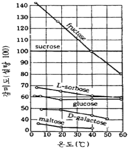

식품산업기사(구) (2005-05-29 기출문제)
1과목: 식품위생학
1. 일반적으로 열경화성 수지에 해당되는 플라스틱 수지는?
- 폴리에틸렌(polyethylene)
- 폴리프로필렌(polypropylene)
- 폴리아미드(polyamide)
- 요소(urea) 수지
(정답률: 알수없음)

2. 보툴리누스균에 의한 식중독이 가장 일어나기 쉬운 식품은?
- 유방염에 걸린 소의 우유
- 분뇨에 오염된 식품
- 살균이 불충분한 통조림 식품
- 부패한 식육류
(정답률: 알수없음)
3. 단백질의 부패산물로 볼 수 있는 알레르기성 식중독의 원인 물질이 아닌 것은?
- 히스타민(histamine)
- 프토마인(ptomaine)
- 부패아민류
- 아우라민(auramine)
(정답률: 알수없음)
4. 포도상구균 식중독을 설명한 것 중 틀린 것은?
- 독소는 210℃에서 30분이면 파괴된다.
- 화농성 상처와 관계 있다.
- 독소는 엔테로톡신(enterotoxin)이다.
- 잠복기간이 7∼26일(평균16일)이다.
(정답률: 알수없음)
5. 카드뮴에 대한 설명 중 잘못된 것은?
- 카드뮴에 의한 중독은 대개의 경우 급성중독이다.
- 임산부의 골다공증과 골연화증을 일으킨다.
- 공장폐수 중의 오염물질로 이타이이타이병을 일으킨다.
- 인체 중 콩팥의 세뇨관에 축적된다.
(정답률: 알수없음)
6. 식품오염에 문제가 되는 방사성 물질이 아닌 것은?
- 90Sr
- 137Cs
- 131I
- 12C
(정답률: 알수없음)
7. 쇠고기 육회(肉膾)를 먹을 때 감염될 수 있는 기생충은?
- 유구조충
- 십이지장충
- 요충
- 무구조충
(정답률: 알수없음)
8. 식품의 발색제와 거리가 먼 것은?
- 황산 제1철
- 황산구리
- 아질산나트륨
- 질산칼륨
(정답률: 알수없음)
9. 식중독의 원인이 되는 살모넬라균은?
- Salmonella typhi
- Salmonella enteritidis
- Salmonella parahaemolyticus
- Salmonella perfringens
(정답률: 알수없음)
10. 선모충(Trichinella spiralis)의 감염을 방지하기 위한 가장 좋은 방법은?
- 송어 생식금지
- 쇠고기 생식금지
- 어패류 생식금지
- 돼지고기 생식금지
(정답률: 알수없음)
11. 포름알데히드(formaldehyde)가 용출될 염려가 없는 합성수지는?
- 페놀수지(phenol resin)
- 염화비닐수지(vinyl chloride resin)
- 요소수지(urea resin)
- 멜라민수지(melamin resin)
(정답률: 알수없음)
12. 식품의 포장재료로 가장 중요한 금속박은?
- 강철박
- 알루미늄박
- 주석박
- 아연박
(정답률: 알수없음)
13. 미나마타(minamata)병의 원인이 되는 금속은?
- Cd
- Hg
- Pb
- Zn
(정답률: 알수없음)
14. 포도상구균에 의한 식중독 예방 대책으로 가장 중요한 것은?
- 가축사이의 질병을 예방한다.
- 식품 취급장소의 공기 정화에 힘쓴다.
- 보균자의 식품 취급을 막는다.
- 식품을 냉동·냉장한다.
(정답률: 알수없음)
15. 착색료로서 갖추어야 할 조건이 아닌 것은?
- 인체에 독성이 없을 것
- 식품의 소화흡수율을 높일 것
- 물리화학적 변화에 안정할 것
- 사용하기에 간편할 것
(정답률: 알수없음)
16. PCB에 대한 설명 중 틀린 것은?
- 미강유에 원래 들어 있는 성분이다.
- Polychlorinatedbiphenyl의 약어이다.
- 1968년 일본에서 처음 중독 증상이 보고되었다.
- 인체의 지방조직에 축적되며, 배설속도가 늦다.
(정답률: 알수없음)
17. 참치통조림의 검사방법으로 부적절한 것은?
- phosphatase법
- 내압시험
- 외관검사
- 타검법(타관법)
(정답률: 알수없음)
18. 보존료로서의 구비조건이 아닌 것은?
- 값이 싸고 독성이 낮을 것
- 색깔이 양호할 것
- 사용이 간편할 것
- 미량으로 효과가 있을 것
(정답률: 알수없음)
19. 다음 중 연결이 잘못된 것은?
- 독미나리 - 시큐톡신(cicutoxin)
- 황변미 - 시트리닌(citrinin)
- 피마자유 - 고시폴(gossypol)
- 독버섯 - 콜린(choline)
(정답률: 알수없음)
20. 두류 중의 시안(cyan) 화합물에 대한 정성시험에서 시안(cyan)이 존재하면 피크린산지는 어떤 색으로 변하는가?
- 적갈색
- 황색
- 녹색
- 청색
(정답률: 알수없음)
2과목: 식품화학
21. 찹쌀과 멥쌀의 끈기의 차이를 설명한 것 중 가장 옳은 사항은?
- 찹쌀에는 아밀로펙틴이 많고 아밀로오스가 적게 있다.
- 찹쌀에는 아밀로오스가 많고 멥쌀에는 아밀로펙틴이 적게 있다.
- 찹쌀과 멥쌀에는 아밀로오스와 아밀로펙틴이 동량 들어있다.
- 찹쌀과 멥쌀의 끈기는 아밀로오스나 아밀로펙틴의 함량과 관계 없다.
(정답률: 알수없음)
22. 다음 아미노산 중 화학 구조식에 벤젠(benzene) 핵이 있는 것은?
- phenylalanine
- alanine
- glutamic acid
- proline
(정답률: 알수없음)
23. 다음 중 지용성(脂溶性) 색소인 것은?
- carotenoid
- flavonoid
- anthocyanin
- tannin
(정답률: 알수없음)
24. 수박, 토마토의 붉은 색을 나타내는 대표적인 색소는?
- β- carotene
- Lutein
- Zeaxanthin
- Lycopene
(정답률: 알수없음)
25. 지방의 자동산화에 가장 크게 영향을 주는 것은?
- 산소
- 당류
- 수분
- pH
(정답률: 알수없음)
26. 안토시아닌(anthocyanin) 색소를 함유하는 과실 제품의 붉은 색을 보존하려면 어떤 조건이 가장 효과적인가?
- 산을 가한다.
- 중조를 가한다.
- 철염을 가한다.
- 수산화나트륨을 가한다.
(정답률: 알수없음)
27. 유지 산화에 대한 설명으로 틀린 것은?
- 불포화 지방산은 포화 지방산보다 훨씬 산화되기 쉽다.
- 불포화도가 증가할수록 산화속도는 급속히 증대한다.
- 공액 이중결합을 가지는 것은 더욱 산화되기 쉽다.
- Hemoglobin, Cytochrome C는 유지의 산화를 억제한다.
(정답률: 알수없음)
28. 우유 중에서 수용성인 카제인(casein)을 불용성염인 Paracaseinate로 만드는데 관여하는 금속이온은?
- Mg2+
- Ca2+
- Fe2+
- Cu2+
(정답률: 알수없음)
29. 다음 중 동물성 스테롤(sterol)은?
- cholesterol
- ergosterol
- sitosterol
- stigmasterol
(정답률: 알수없음)
30. 요소(urea) 생성에 관여하지 않는 아미노산은?
- ornithine
- citrulline
- arginine
- histidine
(정답률: 알수없음)
31. 식품에서 단백질의 중요한 기능적 성질이 아닌 것은?
- 가소성
- 젤화
- 기포성
- 유화성
(정답률: 알수없음)
32. 다음 중 포스파티딜 콜린(phosphatidyl choline)의 구조로 되어 있는 인지질은 어느 것인가?
- 세파린(cephalin)
- 레시틴(lecithin)
- 스핑고미엘린(sphingomyelin)
- 세레브론(cerebron)
(정답률: 알수없음)
33. 다음 그림은 각 당류의 온도에 따른 감미(단맛)도 변화를 나타낸 것이다. 다음 설명 중 틀린 것은?

- 일반적으로 당의 감미는 온도 상승에 따라 감소한다.
- 설탕은 온도 변화에 따른 감미의 변화가 거의 없다.
- 과당은 온도 변화에 따른 감미의 변화가 가장 심하다.
- 맥아당의 감미가 가장 강하다.
(정답률: 알수없음)
34. 아미노산인 글리신(glycine) 아미노기(-NH2)의 pK 값은 9.7이다. 이는 무엇을 뜻하는 것인가?
- pH 9.7에서 글리신(glycine) 아미노기(-NH2)의 50%가 -NH3+로 존재한다.
- pH 9.7에서 글리신(glycine) 아미노기(-NH2)의 100%가 -NH3+로 존재한다.
- 9.7℃에서 글리신(glycine) 아미노기(-NH2)의 50%가 -NH3+로 존재한다.
- 9.7℃에서 글리신(glycine) 아미노기(-NH2)의 100%가 -NH3+로 존재한다.
(정답률: 알수없음)
35. 단백질의 변성 현상을 이용한 가공식품들 중 서로 관계가 없는 것은?
- 요구르트(Yoghurt) - 단백질의 산에 의한 변성
- 치즈(Cheese) - 단백질의 산에 의한 변성
- 두부 - 단백질의 가열 및 염에 의한 변성
- 빵 - 단백질의 가열 및 염에 의한 변성
(정답률: 알수없음)
36. 마이야르 반응(Maillard reaction)에 영향을 미치는 요인이 아닌 것은?
- 온도
- pH
- 수분
- 효소
(정답률: 알수없음)
37. 아미노화합물이 존재하지 않으며, 당함량이 많은 식품의 가열 또는 가공 중에 일어나는 갈변반응은 무엇인가?
- 멜라닌(melanin) 반응
- 캐러멜(caramel)화 반응
- 멜라노이딘(melanoidin) 반응
- 마이야르(Maillard) 반응
(정답률: 알수없음)
38. 연유 중에 젓가락을 세워 회전시키면 연유가 젓가락을 따라 올라간다. 이런 성질을 무엇이라고 하는가?
- Weissenberg 효과
- 예사성
- 경점성
- 신전성
(정답률: 알수없음)
39. 위에서 분비되는 단백질 분해효소는 어느 것인가?
- 트립신(trypsin)
- 카이모트립신(chymotrypsin)
- 펩신(pepsin)
- 아미노펩티다아제(aminopeptidase)
(정답률: 알수없음)
40. 감자의 영양성분 함량은 수분 78.5%, 탄수화물 18.5%, 섬유질 0.5%, 지방 0.2%, 단백질 2.1%이다. 감자 100g에 대한 열량(kcal)은 얼마인가? (단, 에트워터 계수(Atwater factor)를 이용하여 계산함.)
- 84.2kcal
- 86.8kcal
- 93.7kcal
- 175.7kcal
(정답률: 알수없음)
3과목: 식품가공학
41. 젤리화의 원리에 맞지 않는 것은?
- 1%의 천연 펙틴과 0.3%의 산과 65%의 당을 함유한 과즙 농축물은 쉽게 젤리화 시킬 수 있다.
- 완전히 메톡실화된 폴리갈락투론산은 설탕만 적량 가하면 젤리화 시킬 수 있다.
- 저 메톡실 펙틴으로는 적량의 당과 산이 함유된 농축물을 가열하여도 젤리화 되지 않는다.
- 완전히 디에스테르화된 펙틴으로는 적량의 산과 Ca++이 존재하여도 설탕을 넣지 않으면 젤리화 되지 않는다.
(정답률: 알수없음)
42. 저온 저장한 감자로서 감자 칩(potato chips)을 만들면 색깔이 현저하게 나빠지는 이유는?
- 감자 성분 중 포도당이 증가되었기 때문에
- 감자 성분 중 과당이 증가되었기 때문에
- 감자 성분 중 맥아당이 증가되었기 때문에
- 감자 성분 중 설탕이 증가되었기 때문에
(정답률: 알수없음)
43. 전분 가공에서 석회처리 목적으로 틀린 것은?
- 전분의 침전 분리가 빨라진다.
- 단백질의 응고를 촉진시켜 전분과 분리를 좋게 한다.
- pH를 높여 중성이 되게 한다.
- 펙틴의 침전효과를 좋게 한다.
(정답률: 알수없음)
44. 물탄 우유의 판별법으로 부적당한 것은?
- 빙결점 측정
- 비중 측정
- 산도 측정
- 점도 측정
(정답률: 알수없음)
45. 통조림 제조시 가압살균이 필요 없는 식품은?
- 옥수수
- 죽순
- 완두콩
- 귤
(정답률: 알수없음)
46. 크림(cream) 분리의 조건과 거리가 먼 것은?
- 우유의 온도
- 지방율
- 지방입자의 크기
- 크림의 농도
(정답률: 알수없음)
47. 마요네즈는 난황을 이용한 난가공품이다. 난황의 가장 중요한 기능은?
- 단백질을 공급하는 기능을 한다.
- 유화력에 의한 유화액을 형성한다.
- 마요네즈의 황색을 내는 기능을 갖는다.
- 포립성을 증진시키는 기능을 한다.
(정답률: 알수없음)
48. 장류의 원료에 대한 설명 중 맞는 것은?
- 된장용으로는 찹쌀이 가장 좋다.
- 장류용 보리는 겨층이 제거될 때까지 도정한 것을 사용한다.
- 된장용 소금은 3∼4등급의 소금을 사용한다.
- 장류용 물은 불순물이 많아도 상관없다.
(정답률: 알수없음)
49. 다음 중 공업적으로 과실 쥬스 중의 부유물 침전을 촉진시키기 위한 침전 보조제인 것은?
- 카제인(casein)
- 펙틴(pectin)
- 글루콘산(gluconic acid)
- 셀룰라아제(cellulase)
(정답률: 알수없음)
50. 식용유지 추출용매로 주로 사용되는 것은?
- 핵산(hexane)
- 에틸(ethyl)
- 케톤(ketone)
- 페놀(phenol)
(정답률: 알수없음)
51. 아이스크림 품질 평가 중 큰 유당결정이 생겨 입에서 모래 같은 감촉을 주는 경우를 무엇이라고 하는가?
- buttery body
- crumbly body
- fluffy body
- sandiness
(정답률: 알수없음)
52. 밀가루 반죽의 패리노그램(farinogram)을 구성하는 요소가 아닌 것은?
- 반죽의 경도
- 반죽의 안정도
- 반죽의 호화도
- 반죽의 탄성
(정답률: 알수없음)
53. 다음 두류가공품 중 소화율이 가장 높은 것은?
- 된장
- 두부
- 납두
- 콩나물
(정답률: 알수없음)
54. 간장코지 제조 중 시간이 흐름에 따라 역가가 가장 높아지는 효소는?
- α-amylase
- β-amylase
- protease
- lipase
(정답률: 알수없음)
55. 육가공에서 수침(soaking)을 하는 목적이 아닌 것은?
- 과도한 염분을 제거한다.
- 염지제를 균일하게 분포시킨다.
- 원료육 표면의 오염물질을 씻어낸다.
- 육의 변색을 방지한다.
(정답률: 알수없음)
56. 환경기체조절포장(MAP; modified atmosphere packaging)과 관계가 먼 기체는?
- H2
- N2
- O2
- CO2
(정답률: 알수없음)
57. 계란을 깨지 않고 품질검사하는 방법에 대한 옳은 설명이 아닌 것은?
- 계란에 빛을 비춘후 반대쪽에서 관찰하면 기실의 크기, 난황의 위치 등을 확인할 수 있다.
- 신선한 것은 난황이 보이지 않으나 오래 지난 것은 뚜렷이 보인다.
- 식염수(40g 소금/1L 물)에 계란을 넣었을 때 위로 뜨는 것은 오래된 계란이다.
- 계란의 껍질 표면이 까실까실한 감촉을 느낄수록 오래된 계란이다.
(정답률: 알수없음)
58. 경화유(hardened oil)에 대한 설명이 아닌 것은?
- 어유나 식물유와 같이 불포화지방산 중의 이중 결합을 가진 탄소원자에 수소첨가공정으로 액체유의 융점을 높인 기름을 경화유라 한다.
- 경화유는 유지의 산화안정성, 물리적 성질, 색깔, 냄새 및 풍미 등이 개선된다.
- 냉동장치로 고체 지방을 석출 분리하고, 액체유를 얻는 방법으로서, 저온에서 뿌옇게 혼탁되는 것을 방지한 기름을 경화유라 한다.
- 올레인산(oleic acid)의 액체기름을 스테아르산(stearic acid)의 고체지방으로 만든다.
(정답률: 알수없음)
59. 식육가공에서 훈연의 목적으로 가장 적당한 것은?
- 발색의 증진
- 결착력 향상
- pH 증가
- 증량 효과
(정답률: 알수없음)
60. 과실 착즙과 관련된 착즙기가 아닌 것은?
- 균질기(Homogenizer)
- 초퍼(Chopper)
- 펄퍼(Pulper)
- 피니시어(Finisher)
(정답률: 알수없음)
4과목: 식품미생물학
61. 진핵세포의 형태를 가지는 균류에 속하지 않는 것은?
- 담자균류
- 불완전균류
- 자낭균류
- 분열균류
(정답률: 알수없음)
62. 미생물의 생육인자(growth factor)에 해당되지 않는 것은?
- 주요 영양소인 탄소원, 질소원
- 세포내에서 합성되지 않는 필수 유기화합물
- purine, pyrimidine 염기
- 비타민
(정답률: 알수없음)
63. 분열법으로 증식하는 효모는?
- Schizosaccharomyces 속
- Saccharomyces 속
- Zygosaccharomyces 속
- Debaryomyces 속
(정답률: 알수없음)
64. 세균의 생육에 있어 균체의 세대기간이 일정하고 효소의 기능 및 대사활성이 최대인 것은?
- 대수기
- 잠복기
- 감수기
- 정상기
(정답률: 알수없음)
65. 액체 배지에서 초산균의 특징은?
- 균막을 형성하고 혐기성이다.
- 균막을 형성하고 호기성이다.
- 균막을 형성하지 않으며 혐기성이다.
- 균막을 형성하지 않으며 호기성이다.
(정답률: 알수없음)
66. 식용버섯의 식용부분은?
- 1차 균사
- 2차 균사
- 3차 균사
- 1, 2, 3차 균사
(정답률: 알수없음)
67. 일반적으로 조류는 세포내 엽록체를 갖고 광합성을 한다. 다음 중 특정의 엽록체가 없고 세포 전체에 엽록소가 분산되어 있는 것은?
- 녹조류
- 홍조류
- 남조류
- 연두벌레 식물류
(정답률: 알수없음)
68. 페니실린(Penicillin)의 생산균은?
- Penicillium glaucum
- Penicillium citrinum
- Penicillium chrysogenum
- Penicillium camemberti
(정답률: 알수없음)
69. 발아보리를 발효시켜 생산하는 주류는?
- 포도주
- 맥주
- 일본청주
- 소주
(정답률: 알수없음)
70. 주정과 물의 혼합액 중 주정농도와 증발계수(Ka)와의 관계는?
- 주정농도가 낮아질수록 Ka는 작아진다.
- 주정농도가 낮아질수록 Ka는 커진다.
- 주정농도가 높아질수록 Ka는 변화없다.
- 주정농도가 높아질수록 Ka는 작아졌다, 커졌다 한다.
(정답률: 알수없음)
71. 치즈의 발효와 관계 없는 미생물은?
- Penicillium camemberti
- Propionibacterium freudenreichii
- Pediococcus halophilus
- Streptococcus cremoris
(정답률: 알수없음)
72. 간장 및 된장 제조시 메주에 곰팡이를 번식시키는 주된 목적은?
- 메주의 부패 방지
- 제품에 독특한 향기와 맛을 생성
- 단백질 분해효소 등의 효소 생성
- 간장의 착색
(정답률: 알수없음)
73. 겉보리의 외피에 존재하는 섬유질 다당류를 분해하는 효소는?
- Cellulase
- Hemicellulase
- Invertase
- Melibiase
(정답률: 알수없음)
74. 출아시에 세포가 유리되지 않아서 위균사와 같은 모양을 하는 효모는?
- Candida 속
- Saccharomycopsis 속
- Saccharomyces 속
- Nadsonia 속
(정답률: 알수없음)
75. 포도주 식초생산에 이용되는 초산균은?
- Acetobacter aceti
- Acetobacter xylinum
- Acetobacter oxydans
- Acetobacter vini acetati
(정답률: 알수없음)
76. 진균류에 대한 설명으로 틀리는 것은?
- 고등 미생물로서 곰팡이, 버섯, 효모의 대부분이 여기에 속한다.
- 격벽(septa)의 유무는 곰팡이를 분류하는 중요 지표의 하나이다.
- 진균류의 번식은 주로 균사에 의해 이루어진다.
- 유성포자에 따라 접합균류, 자낭균류, 담자균류 등으로 분류한다.
(정답률: 알수없음)
77. 곰팡이의 형태적 특징을 바르게 설명한 것은?
- Aspergillus 속 - 정낭 위에 분생자를 착생한다.
- Penicillium 속 - 병족세포를 갖고 있다.
- Mucor 속 - 가근과 포복지를 갖는다.
- Rhizopus 속 - 유성생식 결과 자낭 안에 8개 정도의 자낭포자를 형성한다.
(정답률: 알수없음)
78. 포도에 번식해서 산을 소비하여 신맛을 감소시키고, 감미를 높이는 곰팡이는?
- Cladosporium herbarum
- Botrytis cinerea
- Alternaria tenuis
- Trichoderma viride
(정답률: 알수없음)
79. 난형이며 알콜발효력이 강한 상면발효효모로 영국식 맥주 제조에 사용되는 효모는?
- Saccharomyces carlsbergensis
- Saccharomyces coreanus
- Saccharomyces fragilis
- Saccharomyces cerevisiae
(정답률: 알수없음)
80. 10℃의 냉장고에 보관중인 생선이 부패 변질되었다. 원인균 검출시험에서 우선적으로 검출이 예상되는 세균은?
- Bacillus 속
- Pseudomonas 속
- Clostridium 속
- Proteus 속
(정답률: 알수없음)